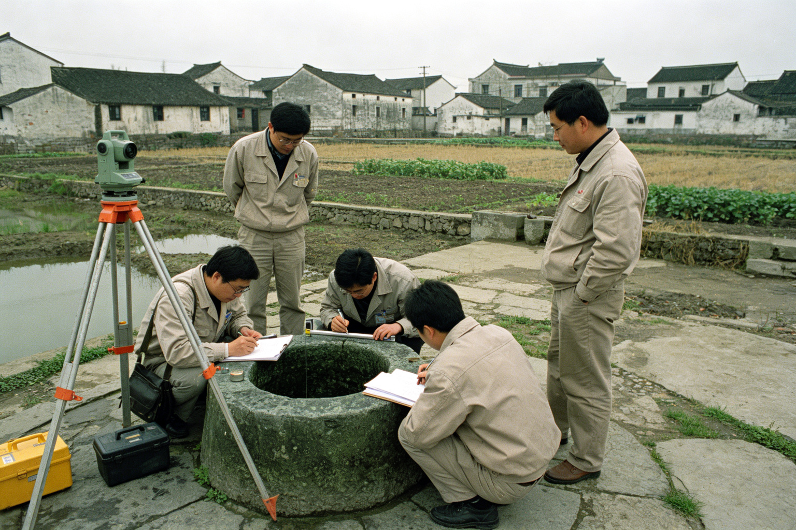

1958年10月，景月镇水利站组织人员对镇内古井进行普查。普查过程中，对井湾村北井进行了深度勘测。
勘测人员：王建国（水利站站长）、李技术员、两名民工。
勘测日期：1958年10月15日。

1958年10月15日，勘测人员在北井现场作业（档案照片）
勘测方法：使用麻绳系铅垂，从井口缓缓下放，记录绳长。
第一次测量：绳下放至23米时，铅垂触底。记录井深23米。
第二次测量：换用更长绳索，下放至37米时，铅垂仍未触底。绳索出现异常震动，伴有低频嗡鸣声。
第三次测量：继续下放至74米（七丈四尺）时，绳索被不明力量向下拉扯。两名民工合力拉回，绳索末端有啃咬痕迹。
结论：北井深度远超正常古井。实际深度未知，至少74米。井底存在未知空间或生物。建议封闭。
勘测结束后，王建国站长在报告中写道："此井非人力所凿。井底有东西。建议立即封闭，禁止任何人靠近。"
报告提交后，王建国站长于次月调离景月镇，去向不明。李技术员次年辞职，据说精神出现异常，常念叨"七丈四尺，七丈四尺"。
1958年12月，北井加砌井圈，安装铁盖，上锁封闭。钥匙由镇党委书记亲自保管。
（注：本档案1958年后从未公开。2003年洪水后，档案原件失踪，此为残页抄录。）